2. Tracking objects
0. Introduction
Once you are ready to process a video, you can launch the trackR by typing the following command in the R console:

This will open the app launcher either in the viewer pane of RStudio and Positron, or in a separate window, depending on your local configuration. In RStudio at least, you can control where the app opens by setting the launch.browser option. For instance:
trackR(launch.browser = shiny::paneViewer())will launch the app in the RStudio viewer pane.
Once the launcher is running, click on the “Track” button to launch the tracking app. The launcher will close and the app will start shortly after.
1. Video module
The first step of the tracking process is to load a video file into the app. To do this, simply click the “Select video” button. This will bring up a navigator that you will use to locate the video file that you would like to process. Once you have located the video file in the navigator, click the “Select” button. The app will open the video and display its first image in the display window (see below).
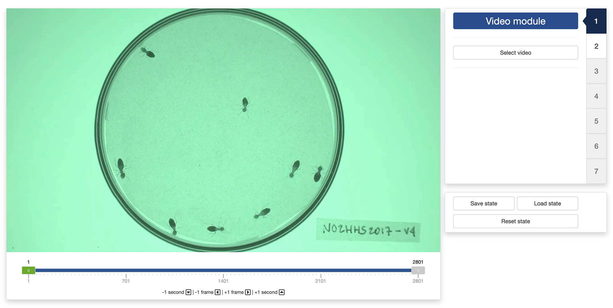
You can navigate through the video by sliding the green tab along the timeline displayed below the video. The gray tabs can be used to restrict the analysis to a specific time interval of the video.
Once the app has opened the video, you can move to the “Background module” by clicking on the tab marked “2” on the right side of the control panel.
2. Background module
In the “Background module”, you can either choose to load an existing background image (e.g., an image of the empty experimental setup before the start of the experiment) or you can ask the app to automatically reconstruct that background from the video.
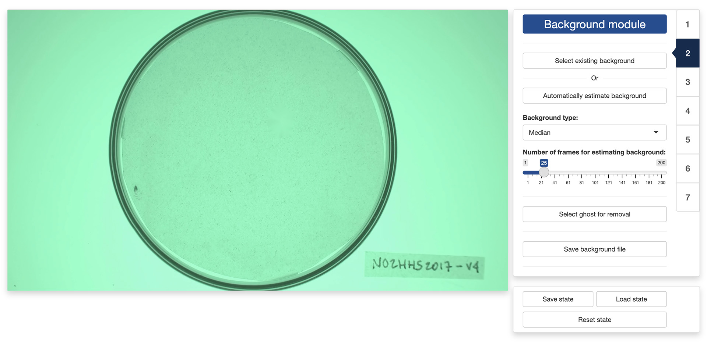
If you choose to select an existing background image, just click on the “Select existing background” button and use the navigator to locate and select the desired image. You can then skip the rest of this section and go directly to the next section.
If you choose to let the app reconstruct the background from the video, you will first need to decide on two things:
- The “Background type” which correspond to the algorithm that the app will use to reconstruct the background. Four algorithms are available:
- “Mean” computes a background image in which each pixel is the average of the corresponding pixels in the selected video frames. This is a fast algorithm. However it does not always produce good results.
- “Median” computes a background image in which each pixel is the median of the corresponding pixels in the selected video frames. This usually produces a better result than “Mean”, but will take longer to complete.
- “Minimum” computes a background image in which each pixel is the minimum of the corresponding pixels in the selected video frames. This usually produces a good result when the objects to isolate are lighter than the background.
- “Maximum” computes a background image in which each pixel is the maximum of the corresponding pixels in the selected video frames. This usually produces a good result when the objects to isolate are darker than the background.
- The “Number of frames for estimating background”. Better results are usually obtained with larger number of frames but the background will be slower to reconstruct.
Once you have selected these two parameters, click on the on the “Automatically estimate background” button and the app will start reconstructing the background from the video.
In some occasions, like in the image on the left below, the app will not reconstruct the background completely. This can happen, for instance, when an object did not move at all during the entirety of the video like it is the case here.
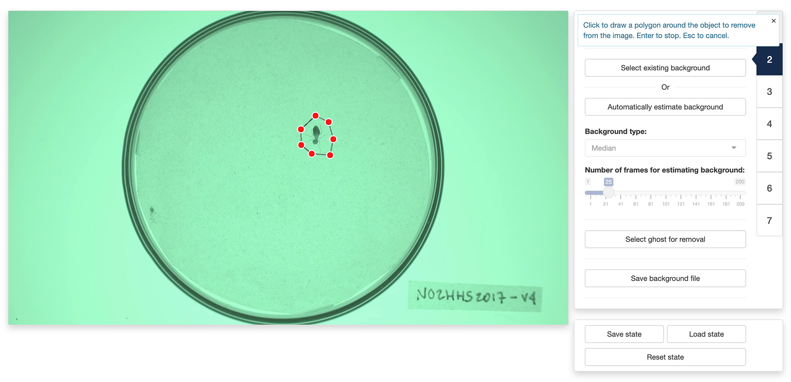
You can fix some of these “ghosts” by clicking the “Select ghost for removal” button. This will allow you to draw a polygon around the object to remove from the background by using the left button of your mouse/trackpad. Once you have surrounded the object with a polygon, use the return key on your keyboard to close the polygon. The app will then use the pixels surrounding the polygon that you traced to replace the object with its best guess about the color of the background below it.
Note: the ghost removal mode is very basic and may not yield good results with complex backgrounds. Another option is to save the background file with the ghosts and use a more advanced image editing software to remove them (for instance, Photoshop’s
Remove toolcan give much better results).
Once you are happy with background generated by the app, you can click the “Save background file” button to save the background image for later (re)use.
3. Mask module
The “Mask module” is optional and can be skipped. It should be used if you would like to restrict tracking to specific areas of the image, for instance to exclude the outside of an experimental arena where things may be moving that should not be tracked (e.g., the hands of the experimenter). By default, the app will use the entirety of the visible frame to perform the tracking.
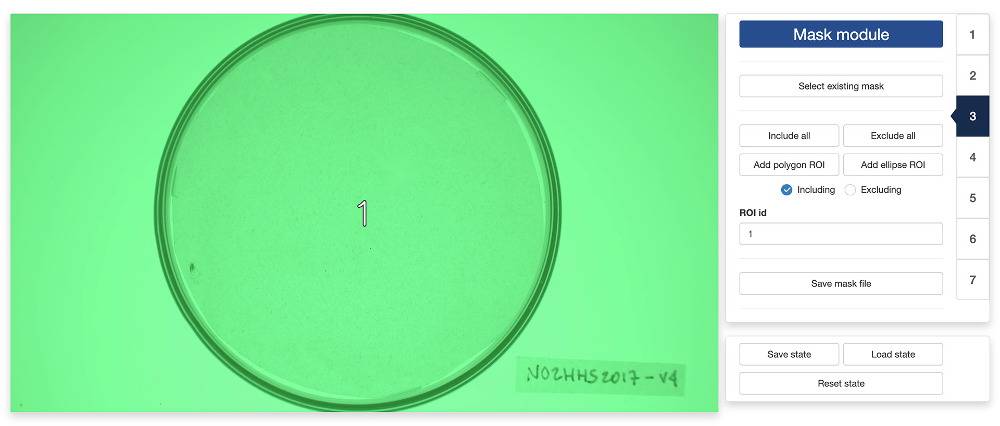
The control panel of the “Mask module” allows you to either use an existing mask or to design your own. To use an existing mask, click the “Select existing mask” button and use the navigator to locate and select the desired mask image. A mask image should be a grayscale image of the same resolution of the video. Non-black portions of the image will be included in the tracking while black portion will be excluded. Different shades of gray can be used to delimit different parts of the mask.
If you would like to design your own mask (or modify an existing mask that you have loaded in the app), you can use the following controls:
- “Include all” tells the app to use the entirety of the visible frame to perform the tracking. This is a useful button to reset the mask to its default setting.
- “Exclude all” tells the app to use none of the visible frame to perform the tracking. This is a useful button to wipe out the mask before adding authorized areas for tracking using the “Add polygon ROI” and ”Add ellipse ROI” buttons.
- “Add polygon ROI” (region of interest) allows you to draw a polygon on the mask by using the left button of your mouse/trackpad. Once you are sastified with your polygon, use the return key of your keyboard to close it. If the “Including” radio button is selected, then the area inside the polygon will be included in the tracking. Otherwise, it will be excluded.
- “Add ellipse ROI” allows you to draw an ellipse on the mask by indicating 5 points along the periphery of the area of interest. Use the left button of your mouse/trackpad for this. Once you have finished adding the 5 points, the app will compute the ellipse best fitting them. It is recommended to select 5 points that are roughly equidistant along the periphery of the area of interest. If the “Including” radio button is selected, then the area inside the ellipse will be included in the tracking. Otherwise, it will be excluded.
- “ROI id” allows you to assign a unique identifier to each region of interest, allowing for separating the tracking of objects in each of them in post-processing.
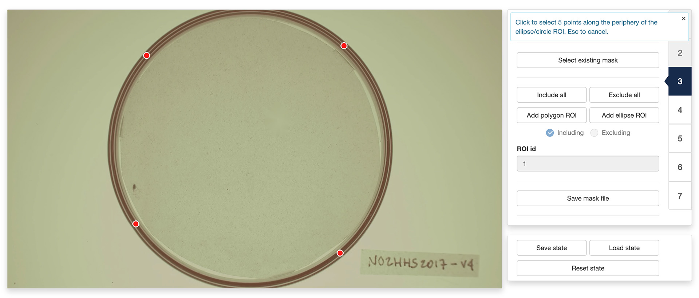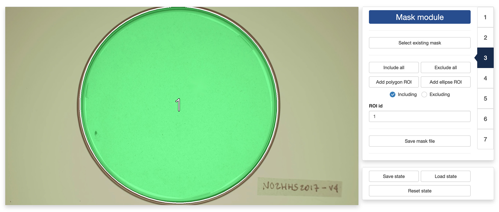
You can combine including/excluding polygons and ellipses to define a mask as complex and detailed as you would like. Included areas will take a slightly greener tint in the display window while excluded areas will take a slightly more red tint (see images above).
Once you are satisfied with your design, you can save it for later (re)use by clicking the “Save mask file” button.
4. Segmentation module
Segmentation is the process of isolating objects of interests from the background of an image. In order to do so, the app first needs to know whether it is looking for objects that are darker or lighter than the background. You can do so by ticking the appropriate radio button at the top of the control panel in the “Segmentation module”.
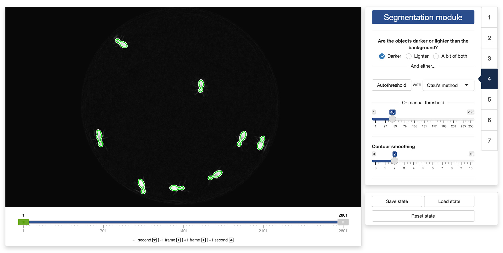
Once this is done, the app will need to know how different from the background a pixel must be to be considered a part of one of the objects to isolate. In order to indicate that information to the app, you can use the threshold slider in the control panel. They will allow you to set the threshold difference above which a pixel is considered a part of an object and not a part of the background.
The objective is to find a threshold that creates a good separation between the objects to isolate and the background. You can see the result of changing the thresholds in the display window: all the parts of the image that are considered an object given the threshold will be surrounded by a green line (see image above). A good threshold will result in green lines tightly following the edges of the objects to isolate.
You can also let the app search for a good threshold by clicking the “Autothreshold” button in the control panel. The app can use multiple methods to estimate a threshold that provides good segmentation results. You can try select a method using the dropdown menu next to the “Autothreshold” button, and observe their effect by running the autothresholding operation again. You can then tweak manually this suggested threshold if you want.
Finally, you can exclude very fine details of the objects to isolate (e.g., the legs of the termites in the image above) by playing with the “Contour smoothing“ slider. This can be useful to obtain a more accurate tracking of the centers of mass of the objects (fine details can introduce unnecessary noise in the trajectory).
It is recommended to look at the result of the segmentation process in different parts of the video using the control slider below the video display. This will ensure that the selected threshold gives good results throughout the video.
5. Identification module
By default, the app can track objects reliably as long as they do not come in close contact with each other. When that happens, however, the app will use a number of heuristics to try and separate them. These heuristics are based on various parameters of the objects, namely:
- Their maximum width, in pixels
- Their maximum height, in pixels
- Their maximum surface area, in pixels
- Their density, that is the ratio between their surface area and the surface area of the ellipse that is enclosing the object (objects with a high density resemble better perfect ellipses).
You can set these parameters manually using the corresponding input boxes in the control panel of the “Identification module”. You can also let the app search for good values for these parameters by clicking the “Auto parameters” button in the control panel. The app will look for parameters that provide good separation results in general. You can then tweak manually these suggested parameters if you want.
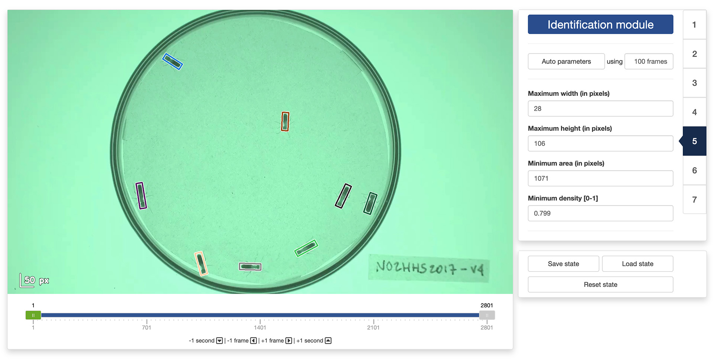
It is recommended to look at the result of the identification process in different parts of the video using the control slider below the video display. This will ensure that the selected parameters give good results throughout the video.
6. Scaling module
By default, the app will set the origin of the coordinate system to the top-left corner of the video. You can change this by clicking the “Set origin” button in the control panel. You then use your mouse to click on the location in the video frame where you want the origin to be.
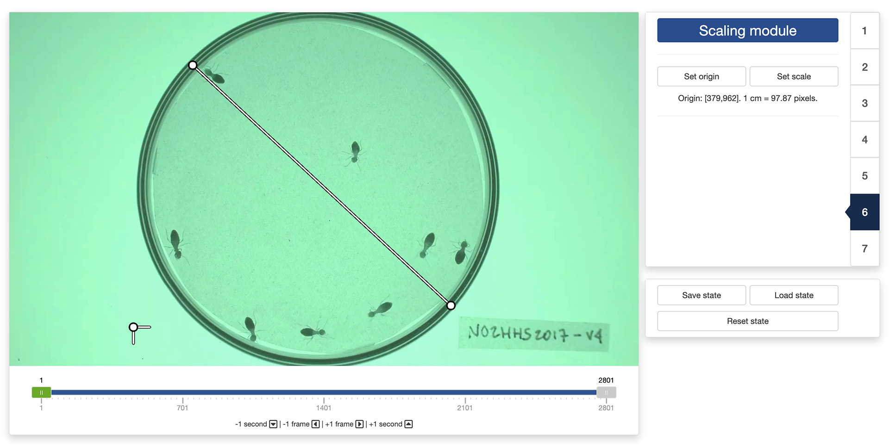
You can also set a scaling factor for directly converting the pixel coordinates into real-world coordinates. For this, click on the “Set scale” button in the control panel. You then use your mouse to select two points in the video frame that are known to be at a certain distance apart in the real world. A pop-up window will ask you to enter the distance between these two points and the unit of measurement you want to use. The app will then automatically convert all the tracking results into real-world coordinates for you.
7. Tracking module
You made it to the tracking module! You are just a few clicks away from starting to process your video.
There are a few more parameters that you can set before launching the tracking:
- “Look back” controls how many past frames the tracking algorithm should take into account to associate each detected object to a track. This is a useful parameter to take into account if, for instance, the objects tend to disappear for a few frames from time to time.
- “Maximum distance” controls the maximum distance in pixels that an object can move between two frames to be still considered as belonging to the same track.
- “Preview tracks during tracking” controls whether a preview of the tracking results should be displayed during the tracking process. The preview shows 1 frame per second of the video with the trajectories overlaid on top. This will slow down a bit the tracking process, but this can be used to check that the tracking is working well when deciding on the right set of tracking parameters.
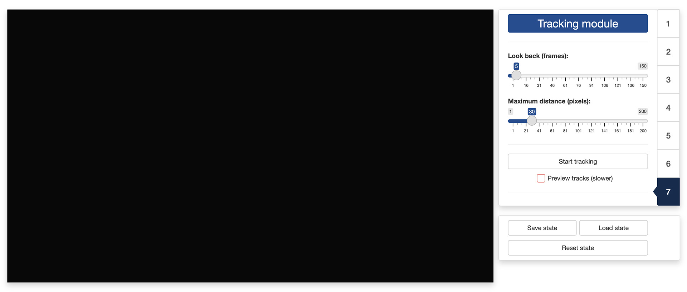
Once all is set, you can finally click on the “Start tracking” button, set a file in the navigator that pops up to store the tracking data, and just let the app works its magic. The data will be saved as a CSV file and the next section will detail the content of this file.
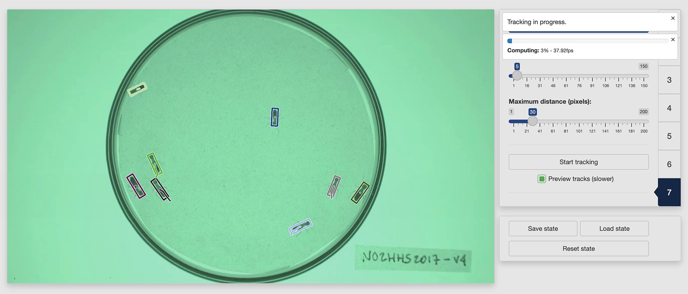
8. Output data
Once the app is done processing the video, the resulting CSV file will contain between 8 and 12 columns depending on whether you have set a real-world scale and origin in the “Scale module”. These columns will be the following:
- “frame” is the video frame number at which the measurements along the corresponding row have been made.
- “track” is the identity of the tracked object as estimated by the app.
- “x” is the x coordinate of the object location in pixels in the context of the video frame. The origin is set at the top-left corner of the frame.
- “y” is the y coordinate of the object location in pixels in the context of the video frame. The origin is set at the top-left corner of the frame.
- “width” is the width in pixels of the object.
- “height” is the height in pixels of the object.
- “angle” is the angle in degrees between the main axis of the object and the y axis.
- “n” is the number of pixels covered by the object in the image.
If you have set a real-world scale and origin in the “Tracking module”, the following extra columns will be saved:
- “x_[unit]” is the x coordinate of the object location in real-world [unit]. The origin is set to the real-worl equivalent to that you have defined in the “Scale module”.
- “y_[unit]” is the y coordinate of the object location in real-world [unit]. The origin is set to the real-worl equivalent to that you have defined in the “Tracking module”.
- “width_[unit]” is the width in real-world [unit] of the object.
- “height_[unit]” is the height in real-world [unit] of the object.
The video used throughout this tutorial was provided by Sridhar, V. H., Roche, D. G., and Gingins, S. (2019). Tracktor: Image-based automated tracking of animal movement and behaviour. Methods Ecol. Evol. 10, 691. doi:10.1111/2041-210X.13166 and used here with permission of the authors.